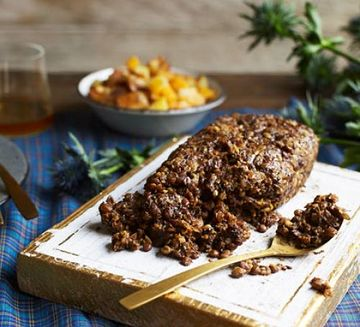
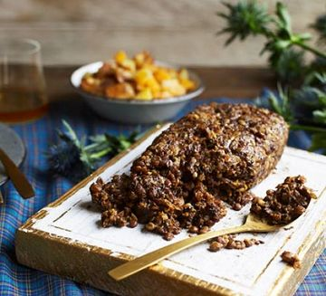

Bizarre Food Types
 


It’s time to take a trip around the world and delve into all the weird foods our species like to chow down. Unfortunately, the world isn’t only full of those tasty breakfasts we spoilt you with a while back – if only. Consider this a public service and an education to save you from shock when you come across these, the 50 weirdest foods from around the world.
- 1. Chicken’s Feet – East Asia, Caribbean, South America and South Africa
- 2. Haggis – Scotland
- 3. Tripe – All Over the World
- 4. Khash – Middle East, East Europe and Turkey
- 5. Tuna Eyeballs – Japan
- 6. Black Pudding (Blood Sausage) – Africa, Americas, Asia, Europe
- 7. Spam – United States
- 8. Hákarl – Iceland
- 9. Surstromming – Sweden
- 10. Century Egg / 100 Year Old Egg / 1000 Year Old Egg – China